| 日付 | 2016年4月24日（日） |
|---|---|
| 山域 | 西上州 |
| メンバー | 家族（妻、長女・5歳、長男・2歳） |
| 山行形態 | 子連れ日帰り |
| アクセス | 車 |
| ルート (Map) | 登山口 (8:22) - 尾根コース - (10:11) 三ツ岩岳 (10:53) - 竜王大権現コース - (11:50) 登山口 |
用事や天候不順などでなかなか山に行けず、1ヶ月ぶりの山行。
アカヤシオの咲く季節になったので、花を求めて三ツ岩岳に行く。
2012年に隣の烏帽子岳に登った際に、次は三ツ岩岳に行こうと思っていたが、
それから4年も経ってしまった。
朝起きると外は土砂降り。群馬は天気が回復するという予報を信じて出発する。
登山口の駐車場に着いた頃には雨が止んでいた。標高650m。
アカヤシオの咲く季節なので、小さな駐車場はもうほとんど埋まっている。
駐車場の側には大仁田ダムが聳えている。
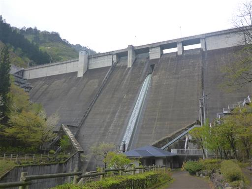
登山口の側にある竜王の里宮。
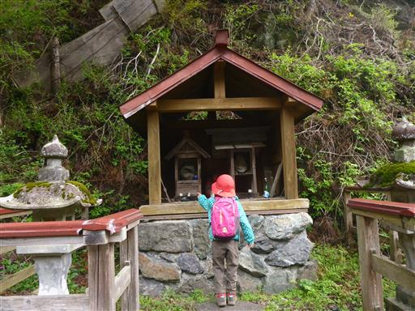
準備を整えたら登山道に入って行く。
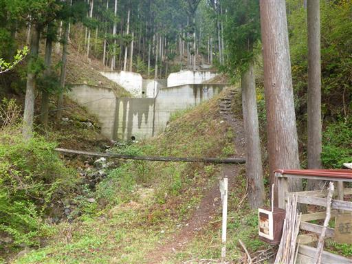
堰堤を見学する。
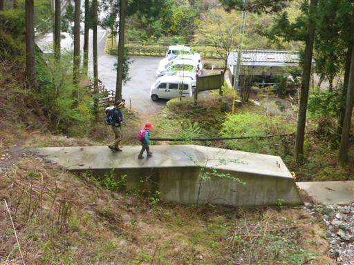
木の橋を渡る。雨が降った後なので、濡れていてよく滑る。
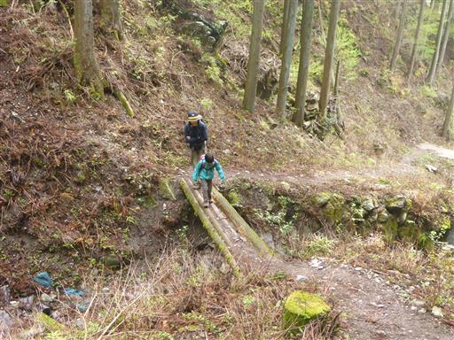
歩き始めてすぐに分岐点に到着する。
この山は2本の登山道があり、周回コースを歩くことができる。
登りは尾根コースを選択する。
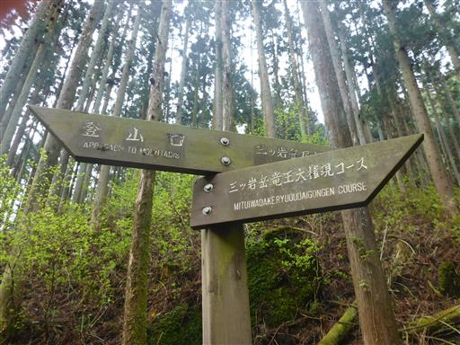
沢沿いの道は湿気が多く、辺りは苔に覆われている。
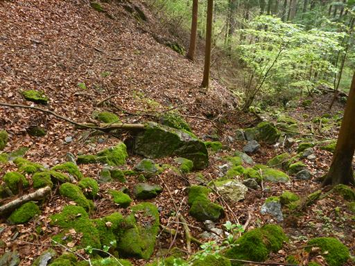
足元にはあちらこちらから新芽が顔を出している。
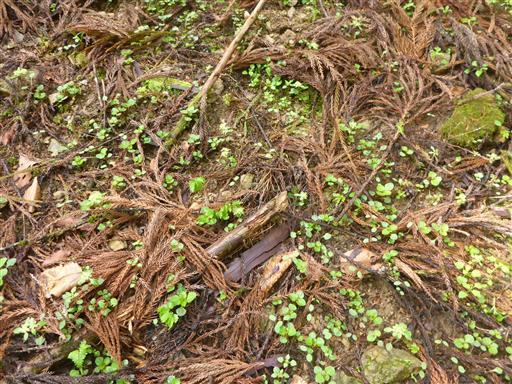
最初の方は植林地帯の中の登りが続く。
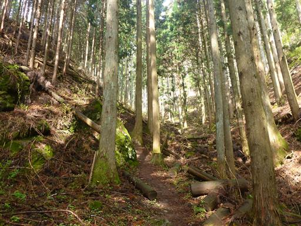
途中で荒れた林道に到着。歩きやすくなったので、息子を降ろして歩かせてみる。
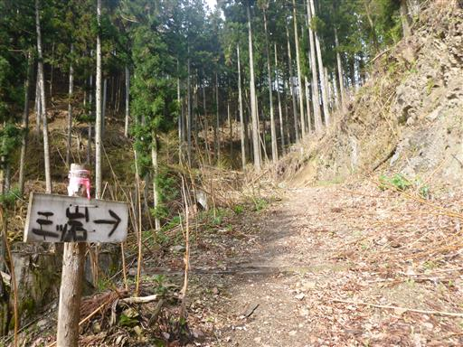
早速、木の棒を拾って遊びだす。途端に前に進まなくなってしまった。
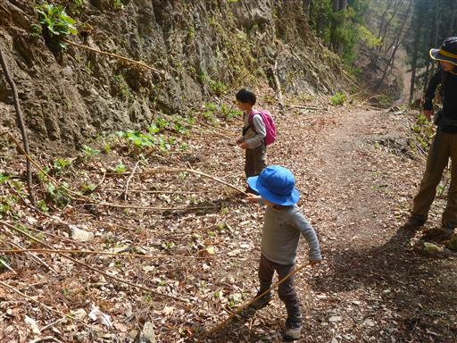
次は栗を拾って遊ぶ。素手で触って痛くないのだろうか？
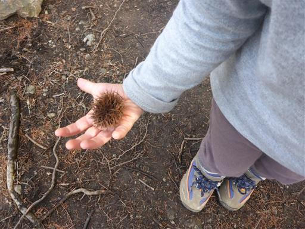
ようやく辺りにツツジの花が現れ出す。
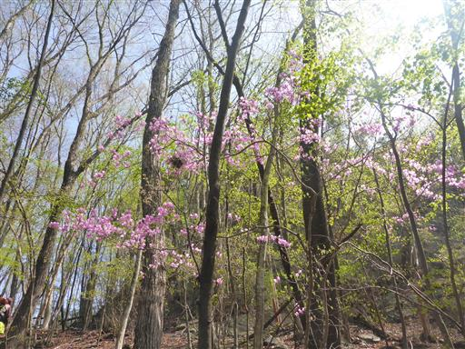
尾根に到達。雲が消えて日差しが出てきた。
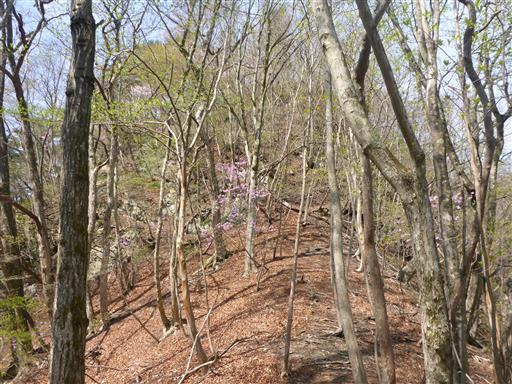
咲いているのはミツバツツジが多い。
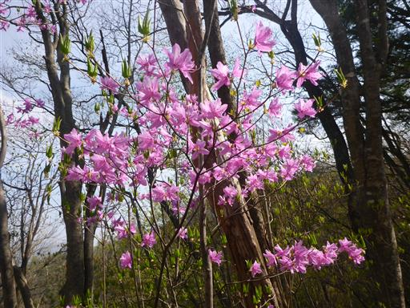
アカヤシオを発見。ミツバツツジとは花の質感が違い、こちらは繊細だ。
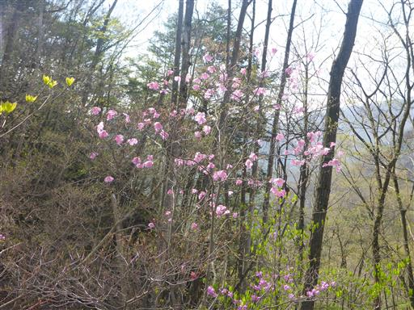
残念ながら多くの花はもう地面に落ちている。
一週間ほど来るのが遅かったか…
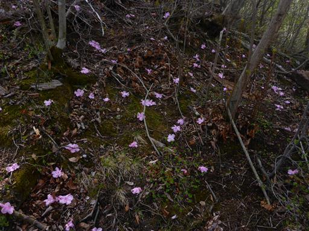
花びらを拾って遊ぶ。
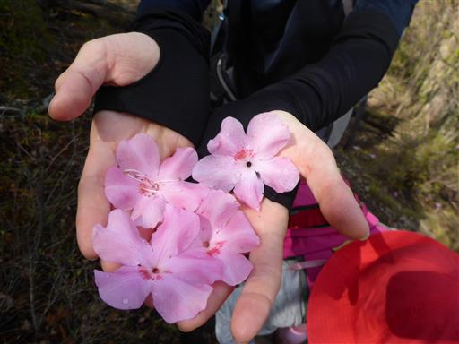
尾根は岩がちになって来る。いかにも西上州の山らしい地形だ。
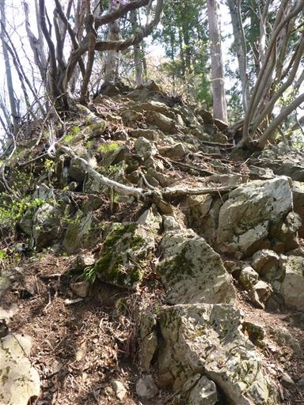
木が複雑に絡み合っている。
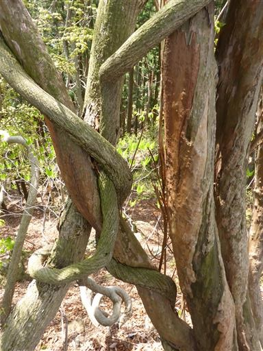
明るい尾根道が続く。新緑とツツジが美しい。

眼下には淡い緑色が広がっている。

ロープをつかんで急斜面を下る。それなりにアップダウンがある
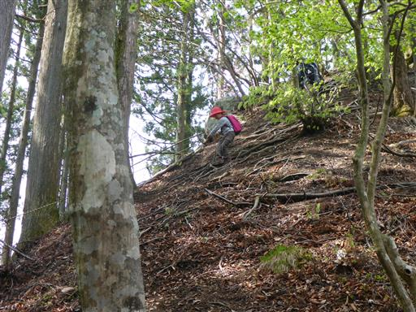
巨大な岩。この岩は左から巻いていく。
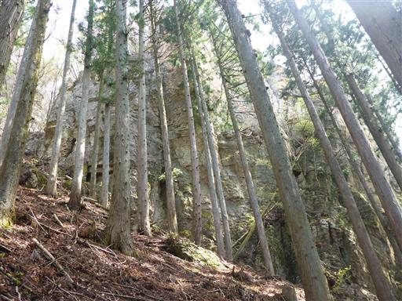
特に難易度が高い岩場は無いが、ロープをつかんで登る場所などが続く。

ヒカゲツツジの花も咲いている。
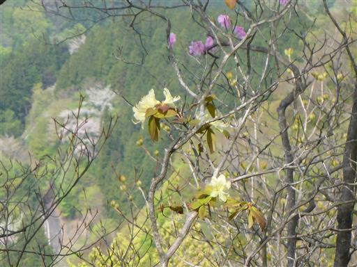
山頂直下でもう1つの登山道と合流する。
登ってきた方向と反対側の斜面はアカヤシオの大群落だ。
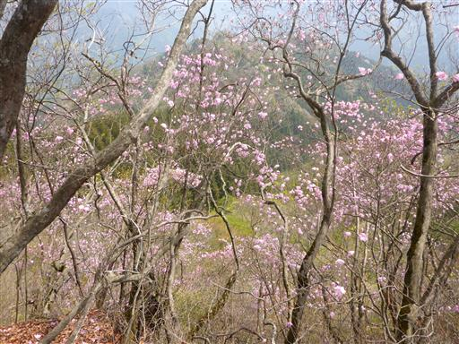
アカヤシオのトンネルを潜って山頂を目指す。
稜線上は日当たりが良いためか、多くの花はもう落ちている。
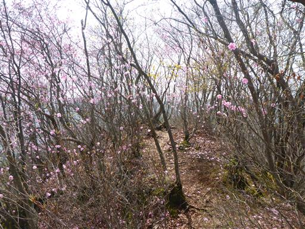
途中で展望が広がる。右に見えるのは鹿岳だ。
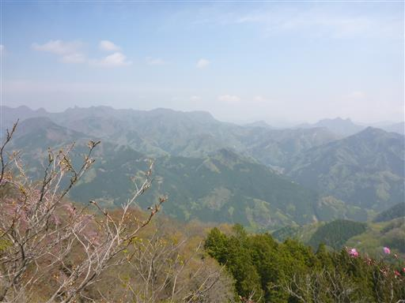
アカヤシオに彩られた山頂を望む。見事な景色だ。
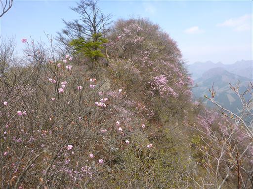
三ツ岩岳に到着する。標高1032m。
比較的狭い山頂だが、小さいスペースに腰を下ろして昼食をとる。
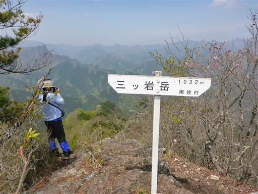
山頂からの展望。正面の岩峰は大岩だ。

眼下に小さな岩峰があり、石仏が祀らている。
そこに至る道はないが、慎重に崖を下りたら辿り着けそうだ。
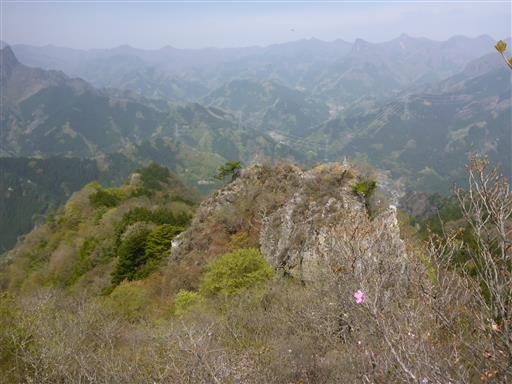
昼食をとったら下山を開始する。
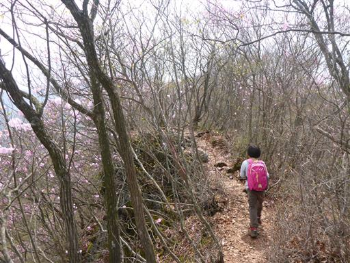
帰り道もアカヤシオを眺めながら歩く。
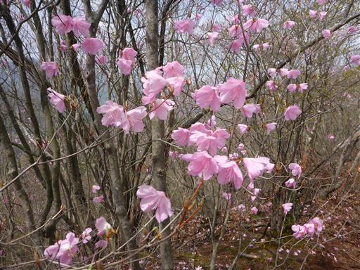
この辺りも新緑が美しい。
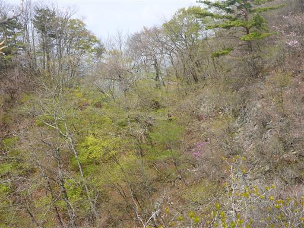
北側の斜面はアカヤシオに彩られてピンク色に染められている。

濃淡無数の花が咲き乱れている。
ようやく念願のアカヤシオの群落を眺めることができた。
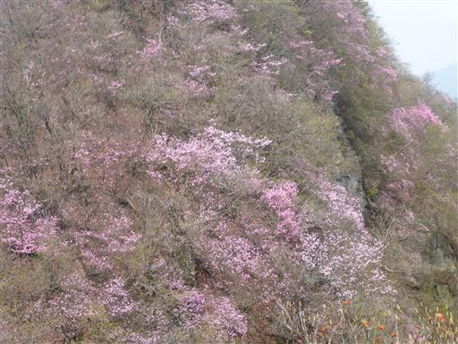
岩の割れ目から植物が顔を出している。バイケイソウだろうか？
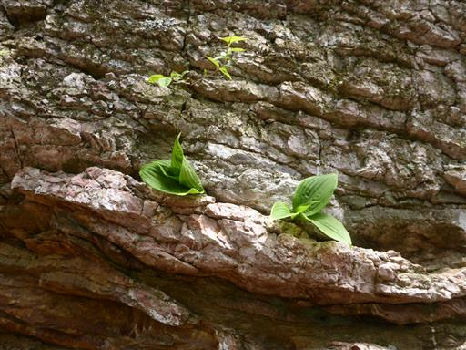
竜王の奥宮に到着。古びた剣が置かれている。
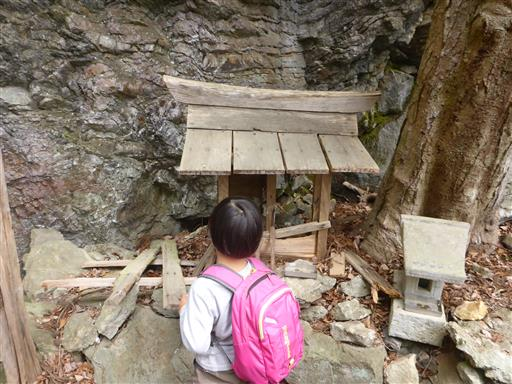
急斜面の登山道を慎重に下る。
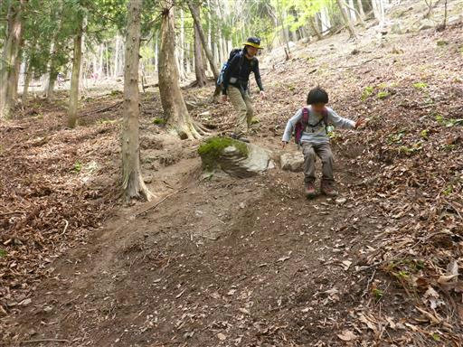
途中でロープも出てくる。登山道に一癖二癖あるのが西上州の山の特徴だ。
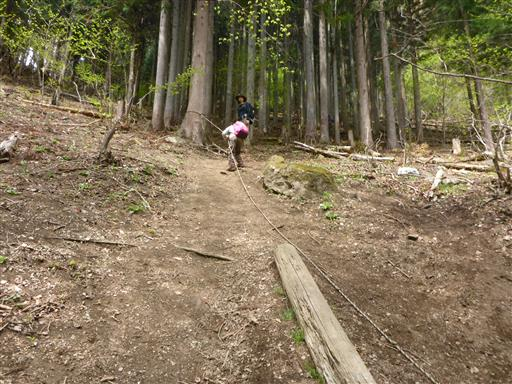
無事下山する。この小さな山に観光バスまで停まっている。
初めて満開のアカヤシオの群落が見られ、満足の山行だった。
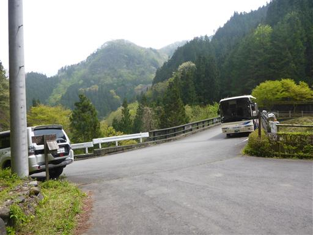